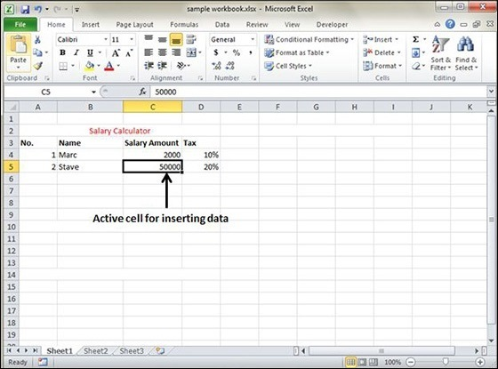
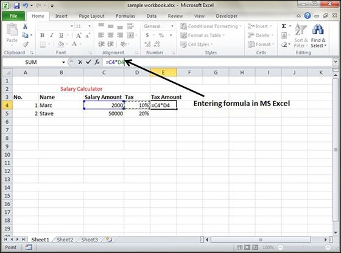
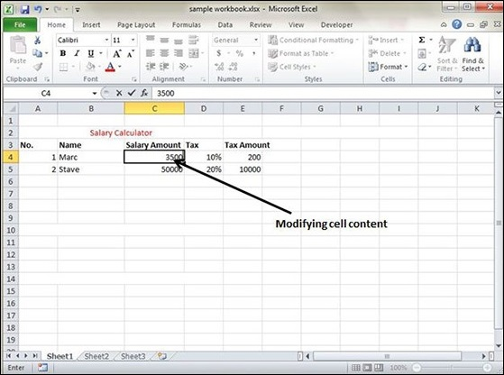

In MS Excel, there are 1048576*16384 cells. MS Excel cell can have Text, Numeric value or formulas. An MS Excel cell can have maximum of 32000 characters.
For inserting data in MS Excel, just activate the cell type text or number and press enter or Navigation keys.

For inserting formula in MS Excel go to the formula bar, enter the formula and then press enter or navigation key. See the screen-shot below to understand it.

For modifying the cell content just activate the cell, enter a new value and then press enter or navigation key to see the changes. See the screen-shot below to understand it.
